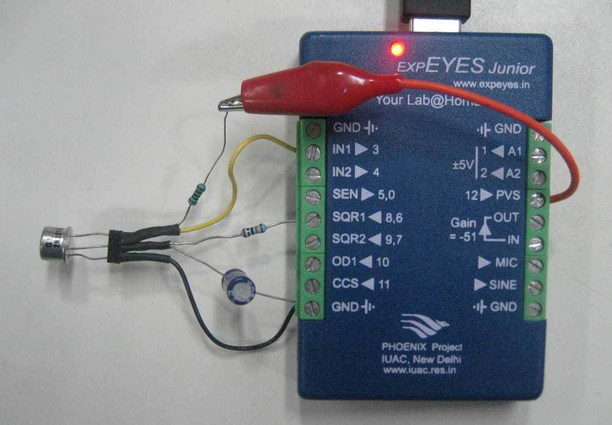

Two variable voltages are required to measure the Common Emitter characteristic of a transistor, for the collector and the base. The PVS output is connected to the collector through a 1k resistor. A DC voltage is generated by operating the SQR1 in Pulse Width Modulated mode. The output is filtered using an RC circuit (R=200k, C=100uF) . This voltage is applied to the base of the transistor. PVS is varied and the collector voltage is plotted against the collector current for different base currents. Base current is calculated by (SQR1 out - 0.65)/200k .
